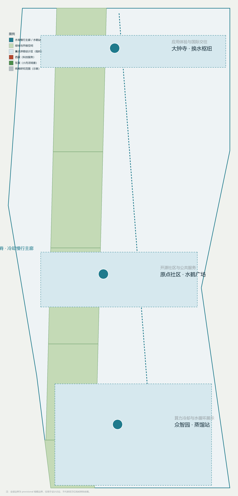
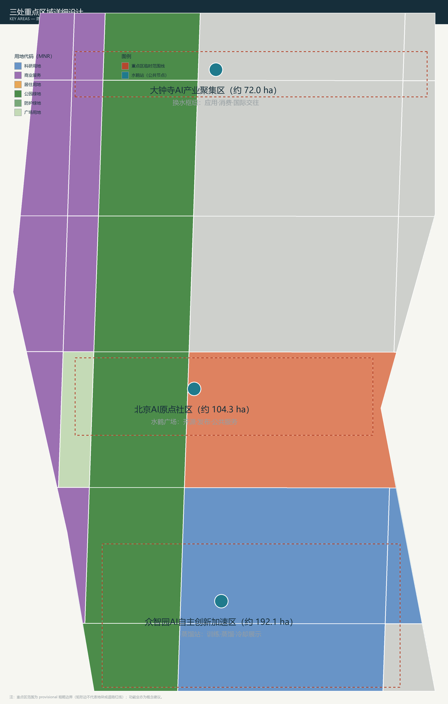
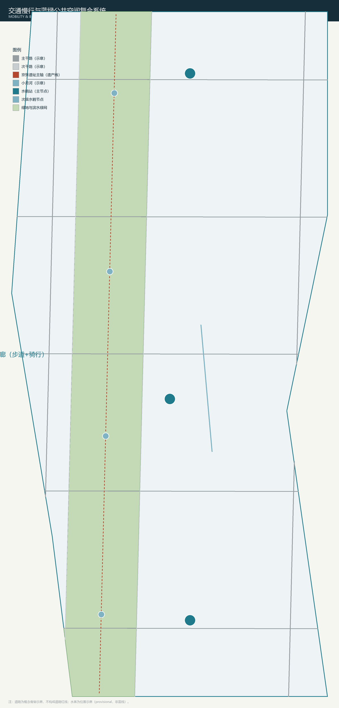
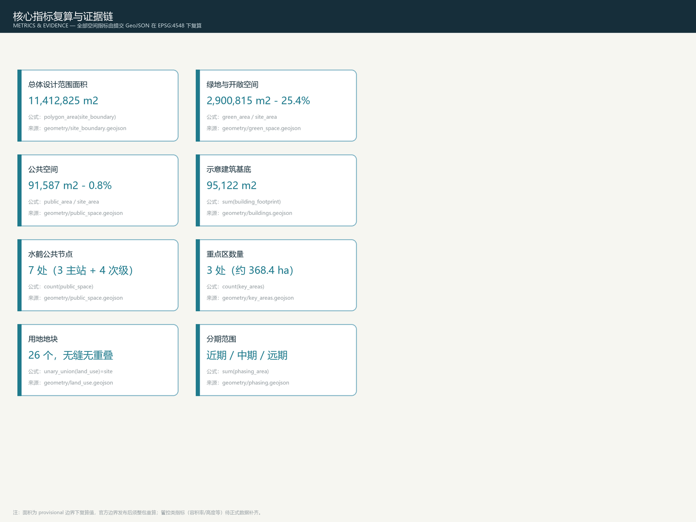

京张水鹤 JINGZHANG WATER CRANE：一条把水、数据与城市循环起来的百年蒸馏带
以蒸汽机车时代京张铁路的供水装置「水鹤」为母题，把 AI 算力冷却、数据管道与清河—小月河—万泉河蓝绿网络组织成一条「百年蒸馏带」：一脊三站两翼、十张以上场景卡、三处产业测试验证场景、五类用户画像与三处 AI 朝圣地标。全部空间结论为基于 provisional 边界的概念建议，可由提交 GeoJSON 在 EPSG:4548 下复算，控规类指标待正式数据补齐。
京张水鹤 JINGZHANG WATER CRANE：一条把水、数据与城市循环起来的百年蒸馏带
设计依据与资料清单
本方案以北京市规划和自然资源委员会海淀分局发布的《百年京张AI创新带城市设计国际方案征集资格预审公告》为第一依据，以面向全球智能体的开源征集任务书为第二依据，以 brief/site-package/ 中经维护者登记的临时粗略边界、三处重点区域、用地枚举、指标边界和来源清单为机器可读依据 来源 来源 来源。所有设计判断都拆分为可追溯来源、可复算指标、可校验图层和可人工复核假设四层，正文只放置与判断相邻的证据标记，完整机器索引保存在 sources.json、metrics.json、compliance_matrix.json、standard_matrix.json 与 design_depth_matrix.json 中。
组织方尚未发布官方 SITE_BOUNDARY 与三处 KEY_AREA 精确多边形，本包使用仓库提供的临时粗略边界（provisional_constraint、official_boundary=false）生成全部空间内容 来源 来源。该边界只能用于方案生成、自检、可视化与设计讨论，不能作为 official redline、审批依据、精确面积依据或法定控制结论；组织方数据缺口本身不阻断内容评分，官方多边形发布后，本包边界、用地、道路、绿地、公共空间、建筑、分期与全部指标均须整包重算 标准。

总体概念：京张水鹤
2.1 概念来源与主名称
蒸汽机车时代，京张铁路沿线设「水鹤」（water crane）为机车加煤加水——水是铁路运行的第一基础设施，水鹤是京张线百年日常的物证。一百二十年后，AI 时代的水以新的形态回到这条走廊：算力需要冷却水，模型需要蒸馏（distillation），数据沿管道流动，清河、小月河、万泉河在城市中穿行。本方案把「水的循环」作为组织母题：从蒸汽到蒸馏，从加水站到冷却交换站，让 AI 创新带成为一条看得见水、用得好水、管得住水的百年蒸馏带。
主名「京张水鹤」，英文 JINGZHANG WATER CRANE；命名体系由「水脊—水站—水翼」构成：水脊（Water Spine，京张遗址公园主轴的蓝绿慢行复合廊道）、三座水站（蒸馏站 Distillery、水鹤广场 Crane Plaza、换水枢纽 Exchange Hub）、两翼（水源翼 Source Wing、水网翼 Network Wing）来源 深度。
2.2 三大定位与五大功能的转译
三大定位在本方案中落到具体对象：百年京张文化带由水鹤遗址记忆与京张水史步道承载；都市AI生活体验带由水鹤广场、滨水公共空间与冷却展示节点承载；AI融合创新带由蒸馏站、换水枢纽与场景试验带承载 标准。
五大功能的转译如下：AI 全栈自主创新体系对应众智园蒸馏站（训练—蒸馏—评测—展示）；世界级AI创新生态对应水脊串联的站城网络；AI+场景赋能新范式对应换水枢纽与两翼场景试验带；智能化AI活力城市对应水鹤广场与公共水岸的日常运营；AI 治理全球话语权对应「冷却透明度」机制——每一处进入公共空间的 AI 服务，都像蒸汽机车加水一样公示其能耗与水耗，让算力的物理代价可见、可旁听、可中止 深度。
2.3 三区两翼协同回路与 Logo 方向
三区两翼形成「取水—蒸馏—换水—回用」的协同回路：水源翼（西翼，中关村科技服务翼）提供要素、资本与标准服务，如同取水；蒸馏站在众智园完成模型训练与蒸馏，如同精炼；水鹤广场在原点社区完成成果发布与开源协作，如同供市民使用的水站；换水枢纽在大钟寺完成应用转化与国际交往，如同换水；水网翼（东翼，小月河场景赋能翼）把场景试验与滨水生活回灌到全域，如同回用 来源 深度。
Logo 方向（概念建议，未使用任何第三方字体、图片或商标）：水鹤剪影与铁轨、水滴三形合一，主色为蒸汽白、铁锈红、水青蓝三色，象征蒸汽时代—铁路遗产—智能时代的时间链条；该方向与公共空间导视系统共用符号语法，避免与文化标识系统混淆 深度。
三层范围工作框架
方案按公告确定的三层范围组织工作 标准 深度：
| 层级 | 设计问题 | 水鹤方案回答 | 数据落点 |
|---|---|---|---|
| 统筹研究范围 43.6 km² | AI 产业生态与未来城市形态如何组织 | 建立「高校策源—蒸馏转化—场景回用—国际传播」的水循环式创新链 | compliance_matrix.json、standard_matrix.json |
| 总体设计范围 11.4 km² | 产业空间、城市更新、交通市政与风貌如何落图 | 一脊三站两翼空间结构，用地、建筑、道路、绿地、公共空间、分期图层共同表达 | 空间数据、空间数据 |
| 重点区域范围 368.4 ha | 三处片区如何达到详细设计深度 | 蒸馏站、水鹤广场、换水枢纽分别提出定位、空间动作、AI 场景与实施依赖 | 空间数据、空间数据、空间数据 |
三层不是互相割裂的图纸集合：统筹研究决定产业链与城市形态判断，总体设计把判断落实到更新项目、空间结构与设施承载，重点区域详细设计验证具体地块、建筑、交通、公共空间与 AI 应用场景的可实施性 深度。本包所有空间结论均由提交图层在 EPSG:4548 下复算，正文中出现的面积与比例均可回溯到 metrics.json 与 GeoJSON。
统筹研究范围产业与未来城市研究
4.1 全球 AI 创新生态案例
方案选取六个可公开核验的全球创新生态案例作为对标，用于提炼「水循环式」创新组织机制（案例数据来自公开来源，仅作背景参考，不作承诺）：
| 案例 | 地点 | 与水鹤方案的关联点 |
|---|---|---|
| 国王十字 King's Cross 更新 | 伦敦 | 铁路货场遗产更新为科技城区，运河水岸成为公共客厅，与京张遗址公园更新同构 |
| 纬壹科技城 one-north | 新加坡 | 滨水生态与研发园区的复合，站城一体组织创新社区 |
| 云栖小镇 | 杭州 | 开发者大会与会展 IP 驱动产业集聚，活动运营模式可借鉴 |
| 慕尼黑 Garching 研究园区 | 德国 | 高校院所与国家级实验室集群，众智园全栈体系的对标对象 |
| Mission Bay 滨水研发区 | 旧金山 | 滨水公共空间与生物科技研发共生，水岸成为人才磁石 |
| 阿姆斯特丹 Science Park | 荷兰 | 滨水生态园区，高校—企业—社区日常慢行网络 |
4.2 水循环式创新链与空间协同
统筹研究范围的核心判断：世界级 AI 创新生态不是静态园区，而是「取水（要素）—蒸馏（研发）—换水（转化）—回用（场景）」的持续循环 来源 标准。海淀高校院所与中关村要素资源如同水源；众智园承担全栈自主体系与标准治理；原点社区承担开源与成果发布；大钟寺承担应用与消费；两翼提供资本、数据、算力与场景支撑。该协同关系写入合规矩阵，并落到 compliance_matrix.json 与总体空间结构图层 深度。
4.3 未来城市形态研究
AI 改变工作、生活、社交、学习、交通与公共服务的方式，在本方案中落实为四类可定位空间：一是水脊慢行主廊（AI 导视、无障碍与活动分级）；二是三座水站（展示、发布、路演）；三是两翼场景试验带（滨水测试与体验）；四是街头水鹤次级节点（日常 AI 公共服务嵌入）。未来城市形态判断为「把基础设施的循环变成公共生活的风景」，与公告「智能化AI活力城市」任务对应 来源 深度。
总体设计范围城市更新与控规深度城市设计
5.1 水脊空间结构
总体设计范围以「一脊三站两翼」为空间结构：水脊沿京张遗址公园主轴布置，宽约 260 米的概念性蓝绿复合廊道，串联三座水站与两翼；水脊同时是慢行主廊、冷却展示带与雨洪海绵带 空间数据 指标。用地分区完整覆盖提交边界、无缝无重叠，共 26 个概念地块，按《国土空间调查、规划、用途管制用地用海分类指南》子集编码 标准 空间数据。
5.2 用地、建筑与拆改留逻辑
用地结构以科研（0802）与商业服务（05）为产业主体，居住（0701）与社区服务（0702）保障职住平衡，教育（0804）、文化（0803）、医疗（0806）完善公共服务，绿地（1401/1402）与广场（1403）构成蓝绿网络，留白用地（16）为未来算力与水循环设施预留弹性 深度。建筑基底为概念性示意（15 处，共约 9.5 万 m²），表达「保留—改造—新建」三类动作的方法而不是结论：京张沿线现状社区与科研楼宇以保留改造为主，三座水站周边以更新新建为主 深度 空间数据 指标。容积率、建筑高度、建筑密度、绿地率、退线与道路红线等控规条件未在公开资料中出现，统一按「待正式数据补齐」处理，不编造数值 深度。
5.3 城市更新总体判断
总体设计范围的城市更新遵循「低扰动、可回退、水循环优先」原则：优先缝合被铁路割裂的东西向联系，优先回用既有建筑与院落，优先把更新项目与冷却水、雨洪、慢行系统耦合，避免大拆大建 深度。更新项目清单见第十章，分期见第十一章。
重点区域详细设计
6.1 众智园AI自主创新加速区（约 192.1 ha）——蒸馏站
定位：花园型全栈自主创新街区。空间动作：以蒸馏站为核心公共节点，强化清河界面与产业展示，组织低碳创新交往空间与对外交通；把模型训练、蒸馏、评测与安全治理转译为可参观、可预约、可监管的展示协作设施；沿清河布置低碳创新廊，承载雨洪与冷却水回用展示 空间数据 深度。
6.2 北京AI原点社区（约 104.3 ha）——水鹤广场
定位：近校型成果转化与人才社区。空间动作：水鹤广场承担开源发布、成果发布、人才服务与公共生活；组织校区—园区—街区慢行缝合；补足人才居住、成果展示、开源协作与轨道站点一体化接驳；水鹤广场同时是「冷却透明度」机制的展示场，公共 AI 服务的能耗水耗在此公示 空间数据 来源。
6.3 大钟寺AI产业聚集区（约 72.0 ha）——换水枢纽
定位：城市型智能经济与国际交往街区。空间动作：换水枢纽承担应用转化、智能终端展示、内容消费与国际路演；围绕大钟寺站组织四象限步行连通与站城一体；重点企业周边公共环境更新与规划绿地复合利用 空间数据 指标。

三处重点区的功能业态、建筑规模、建筑形态、拆改留分类、公共空间系统、交通组织、慢行连通与实施项目均写入 compliance_matrix.json（公告 1.5.3.1/1.5.3.2/1.5.3.3）与设计深度矩阵；重点区范围为临时粗略边界，矩形边不代表地块或道路红线 深度 来源。
用地、建筑规模与拆改留方案
用地结构以科研（0802）与商业服务（05）为产业主体，居住（0701）与社区服务（0702）保障职住平衡，教育（0804）、文化（0803）、医疗（0806）完善公共服务，绿地（1401/1402）与广场（1403）构成蓝绿网络，留白用地（16）为未来算力与水循环设施预留弹性；26 个概念地块无缝覆盖提交边界 标准 空间数据 深度。
建筑基底为概念性示意（15 处、共约 9.5 万 m²），表达「保留—改造—新建」三类动作的方法而不是结论：京张沿线现状社区与科研楼宇以保留改造为主，三座水站周边以更新新建为主，不预设任何地块的拆改留结论 空间数据 指标 深度。容积率、建筑高度、建筑密度、绿地率、退线与道路红线等控规条件未在公开资料中出现，统一按「待正式数据补齐」处理，不编造数值 深度。
AI 创新生态、人才画像与 AI+ 场景
AI 创新生态、人才画像与 AI+ 场景
7.1 用户画像（5 类）
| 用户画像 | 典型需求 | 水鹤空间响应 | 自检边界 |
|---|---|---|---|
| 开源开发者 | 发布、协作、测试、社区声誉 | 水鹤广场开源发布厅、公共代码墙、开发者营地 | 不采集个人行为轨迹；活动数据只做聚合统计 |
| 初创团队 | 低成本办公、算力入口、蒸馏试验场 | 蒸馏站共享测试场、冷却展示亭、标准治理咨询 | 算力与数据服务需另行授权 |
| 头部企业访客 | 展示、商务、国际接待、人才招聘 | 换水枢纽国际路演客厅、轨道接驳、水岸公共空间 | 企业标识与案例须清权 |
| 周边居民 | 通勤、休闲、社区服务、低扰动更新 | 水脊慢行环、水鹤次级节点、滨水公共生活 | 不将居民画像用于商业推荐 |
| 高校师生 | 成果转化、跨校协作、日常慢行 | 校区—园区慢行缝合、水鹤广场发布、AI 教育体验点 | 校园数据与科研成果需授权 |
7.2 AI 场景卡（12 张，覆盖任务书不少于 10 张要求）
| 场景卡 | 空间载体 | 设计说明 |
|---|---|---|
| 01 水鹤冷却展示亭 | 三座水站 | 公共 AI 服务的能耗水耗公示亭，让算力代价可见可查 |
| 02 蒸馏实验室开放日 | 众智园蒸馏站 | 模型蒸馏、评测与红队测试的可预约展示协作设施 |
| 03 水脊慢行导航 | 水脊主廊 | 可解释导视与低侵入传感，识别断点、拥挤与无障碍需求 |
| 04 清河低碳创新廊 | 众智园临清河界面 | 雨洪、冷却水回用、步行骑行与 AI 展示复合的公共客厅 |
| 05 水鹤广场开源发布 | 原点社区 | 代码墙、成果发布、小型路演与人才服务 |
| 06 换水枢纽国际路演客厅 | 大钟寺片区 | 智能体、智能终端与内容消费企业的展示洽谈发布 |
| 07 小月河场景试验带 | 水网翼 | 滨水无人车/机器人测试道与市民体验道并行（见 7.3） |
| 08 数据要素会客厅 | 大钟寺片区 | 以合规授权可审计为前提的数据要素流通服务界面 |
| 09 AI 水务数字孪生 | 全域市政 | 管网、雨洪、冷却水循环的数字孪生巡检场景 |
| 10 京张水史步道 | 水脊 | AR 叠加蒸汽时代水鹤遗址，文化叙事与慢行结合 |
| 11 冷却水回用花园 | 总体范围节点 | 海绵城市与冷却水回用的可触摸水景 |
| 12 全球AI活动周水岸路线 | 一带公共空间 | 从遗址文化、开源社区、产业展示到国际路演的可步行传播线 |
7.3 产业测试验证场景（3 处）
一是众智园算力—冷却一体化测试场：验证高密度算力设施的余热回收与冷却水循环效率，数据脱敏后公开；二是小月河滨水场景试验带：在滨水公共环境中测试低速无人车、机器人与环境感知设备，设置安全员与急停边界；三是大钟寺数字内容体验舱：对智能终端与内容消费产品做 A/B 测试，采集须经明确同意并人工可复核。三处测试场景均为「概念建议/参考方案」，不构成已批准运营安排 来源 深度。
7.4 隐私与人工复核边界
所有 AI 场景遵守数据最小化、公开来源、可解释与人工复核原则：不采集个人行为轨迹，不输出未经授权的个人画像，不把未成熟技术写成已可全面部署，不以非公开数据或指定供应商为必要条件 标准。场景—空间—运营映射写入 compliance_matrix.json 与 visual/index.html。
交通、轨道、市政与公共服务设施
8.1 交通与轨道
交通策略围绕「水脊优先、轨道接驳、微循环缝合」组织：水脊主廊承担南北向慢行主通道；北五环、学院路/西土城路、西直门外大街等既有通道作为对外联系骨架；三座水站均与轨道站点一体化接驳，大钟寺站组织四象限步行连通；道路图层为概念骨架示意，不构成道路红线 空间数据 深度。停车与非机动车停放采用「轨道+慢行+共享」的减量供给原则，具体容量待交通专项深化。
8.2 市政与新型基础设施
市政策略以「水循环市政」为特色：把冷却水回用、雨洪管理、中水系统与城市蓝绿网络耦合，形成「取水—使用—回用—入河」的闭环；分布式能源与端侧算力沿水脊与水站布置，冷却余热优先回用于公共空间与设施 深度。AI 水务数字孪生作为新型基础设施原型，覆盖管网、雨洪与冷却水循环的感知—预测—调度。管线、消防、防洪等工程条件未在公开资料中出现，列为正式深化前置条件 空间数据。
8.3 公共服务设施
公共服务覆盖创新服务平台（成果转化、法务、知识产权、投融资）、人才生活服务（人才公寓、社区服务、托育照护）、公共文化设施（水史步道、展示亭）与体育休闲设施（水脊运动节点）；服务半径与容量指标待官方设施标准确认后复算。
蓝绿空间、公共空间与城市风貌
9.1 水脊蓝绿网络
蓝绿系统以水脊为骨架：绿地与开敞空间约 290.1 万 m²（占总体设计范围约 25.4%），包括沿主轴的公园绿地、清河北岸与小月河滨防护绿地 指标 指标 空间数据。公共空间共 7 处：3 座水站主节点 + 4 处街头水鹤次级节点，面积约 9.2 万 m² 指标 空间数据。水脊同时承担南北贯通（步道+骑行）与东西缝合（横向连接两侧社区与企业）双重功能，慢行断点与跨环路节点在更新项目清单中列项 深度。
9.2 城市风貌与符号系统
风貌基调为「遗产铁锈 + 智慧水青」：沿京张遗址公园保留铁路工业痕迹（铁锈红系），AI 新建设施采用水青蓝与蒸汽白系，形成新旧对话；导视系统与水鹤符号体系共用语法，与整体 Logo 方向一致 深度 标准。城市风貌控制分清官方管控、设计建议与待确认条件，不提供伪精确控制线。
9.3 AI 朝圣地标（3 处）
一是水鹤纪念馆：在蒸汽时代水鹤遗址/档案记忆处设公共纪念馆，AR 叠加历史影像；二是蒸馏塔光廊：众智园蒸馏站的算力可视化装置，把训练过程的光与热转译为公共景观；三是零号冷却井：第一处公共冷却交换站，作为「AI 服务的物理代价可见」的起点地标。三处地标均为概念建议，避免过度娱乐化与网红化 来源 深度。

更新项目清单、实施政策与分期计划
10.1 更新项目清单
| 项目编号 | 项目名称 | 类型 | 主要依赖 | 分期 |
|---|---|---|---|---|
| JZ-01 | 水脊慢行断点缝合 | 公共空间/交通 | 道路红线、桥下空间、交通组织复核 | 近期 |
| JZ-02 | 众智园蒸馏站与冷却展示馆 | 蓝绿空间/产业展示 | 河道蓝线、防洪、算力与能源条件 | 近期 |
| JZ-03 | 原点社区水鹤广场 | 城市更新/公共空间 | 校区边界、权属、首层业态 | 近期 |
| JZ-04 | 大钟寺换水枢纽与四象限步行 | 轨道一体化/慢行 | 轨道站点、道路交叉口、市政管线 | 近期 |
| JZ-05 | 小月河水网翼滨水绿带 | 蓝绿空间/场景试验 | 河道蓝线、试验安全与运营主体 | 中期 |
| JZ-06 | 水鹤公共节点组件库 | 公共空间/品牌 | 公共空间许可、版权清权 | 中期 |
| JZ-07 | 京张水史步道 | 文化/慢行 | 文保、遗址信息核实 | 中期 |
| JZ-08 | AI 水务数字孪生平台 | 新基建/市政 | 管网数据、数据权属与安全 | 远期 |
10.2 实施政策与分期
实施分期与征集周期区分：近期（试点先行）聚焦三座水站与水脊试点段，以轻量设施、运营活动与服务平台启动；中期（缝合提质）完成水网翼、水史步道与公共节点组件库；远期（全域循环）推进外围更新与全域水循环市政 空间数据 深度。政策建议覆盖城市更新统筹实施、空间供给、运营机制、产业服务、公共参与、数据治理与产权协同；涉及权属、资金、实施主体与审批路径的内容一律写为实施风险与前置条件，不写为承诺 深度。
指标体系、面积复算与合规矩阵
核心指标全部由提交几何在 EPSG:4548 下复算：总体设计范围约 11,412,825 m²（临时边界复算值）指标；绿地与开敞空间约 290.1 万 m²（占比约 25.4%）指标；公共空间约 9.2 万 m² 指标；示意建筑基底约 9.5 万 m² 指标；水鹤公共节点 7 处 指标；重点区 3 处 指标；分期覆盖全域 指标。

指标分三类管理：第一类为空间复算指标（上述指标）；第二类为需官方控规支撑的管控指标（容积率、建筑高度、建筑密度、退线、道路红线、设施标准），统一 status=unknown 并待正式数据补齐 深度；第三类为运营绩效指标（AI 创新指数、人才密度、活动参与度、场景使用频次），进入 compliance_matrix.json 作为持续校准项，不冒充审定规划条件 深度。
合规矩阵覆盖公告 1.3、1.4、1.5 全部必选任务与 agent.1—agent.6 六项任务，每条任务对应报告章节、图层、指标、图纸、HTML 页面、来源、假设与自检项，详见 compliance_matrix.json。
风险、版权与合规说明
双语言合同。 本包主文件为中文，随附完整英文对照 proposal.en.md；A3/A0 图纸、HTML 与图件均提供双语版本，术语优先采用 docs/terminology-glossary.md 推荐译法 来源。
主要风险与缺资料清单：官方边界与重点区多边形缺失（不影响内容评分，但所有精确面积须在官方数据发布后整包重算）；控规条件、道路红线、权属、市政、消防、文保与工程条件缺失（相关结论一律降级为待确认事项）深度；水鹤历史实物与遗址信息需专业核实；冷却水与能耗数据需运营阶段实测。以上均写入 assumptions.json 与本自检报告 来源。
版权与合规边界：本方案不声称官方批准、审定控规、最终土地权属、最终建设规模或保证实施；全部空间内容为基于 provisional 边界的概念建议；所有品牌、字体、图像、肖像与企业标识均需清权后使用，未使用任何第三方受版权保护素材；图片、图纸、图标、数据与代码资产来源和许可状态见 sources.json 与 report/copyright_statement.md；HTML 页面为离线静态文件，不加载远程资源、不跟踪行为 标准。
参考资料
- brief/public-brief.md
- brief/site-package/design_brief.json
- brief/site-package/agent_taskbook.json
- brief/site-package/allowed_design_space.json
- brief/site-package/enums/
- brief/site-package/ranges/planning_limits.json
- brief/site-package/geometry/provisional_boundaries.geojson
- brief/site-package/standards/standards.json
- 完整机器索引：
sources.json、metrics.json、compliance_matrix.json、standard_matrix.json与design_depth_matrix.json - 本节书目入口依据场地包登记，完整出处和许可见结构化来源清单 来源